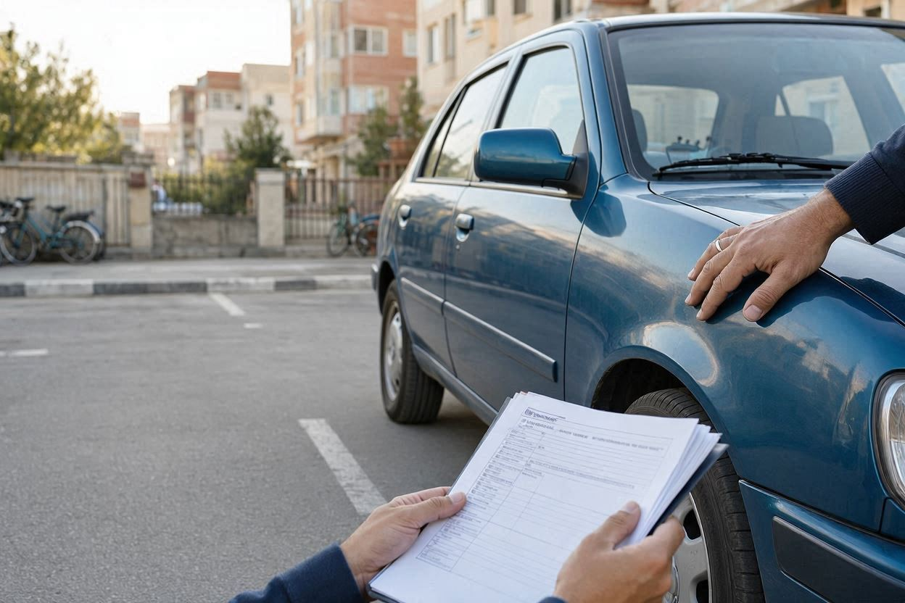
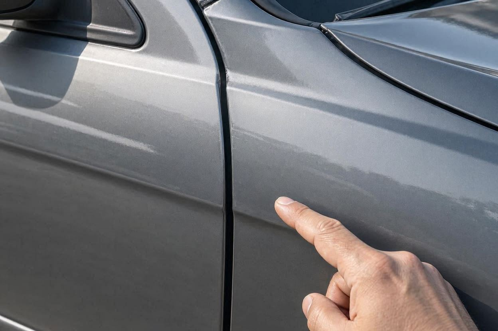
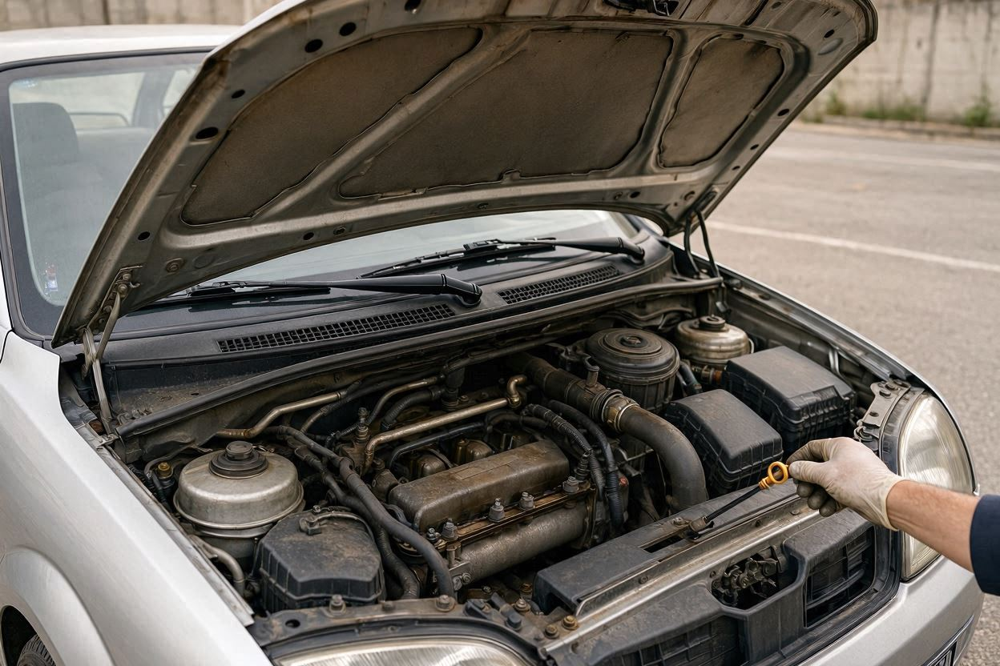
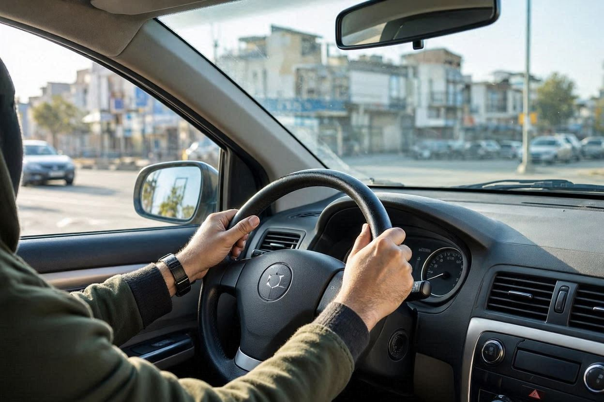
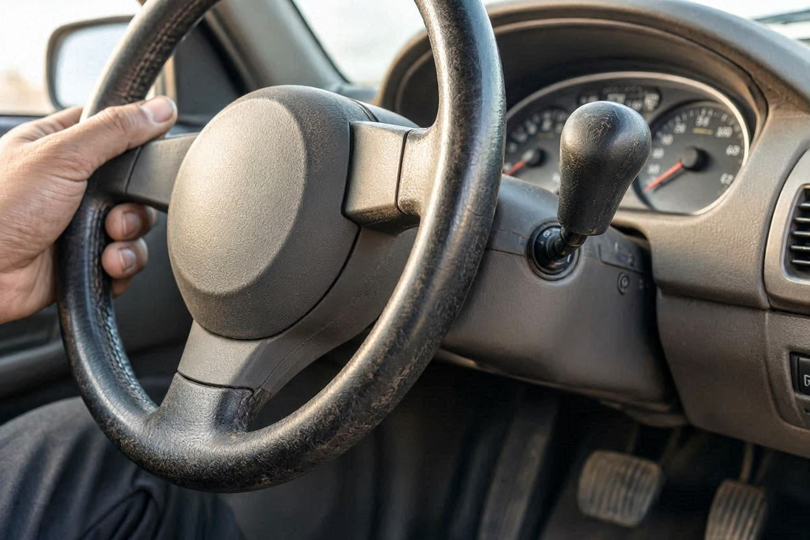

چک لیست خرید خودرو دست دوم؛ از مدارک تا تست فنی
فرض کنید برای دیدن یک خودروی دست دوم رفتهاید. ظاهر تمیز است، فروشنده هم میگوید خودرو بیرنگ و کمکارکرد است. اما ظاهر خودرو همیشه همهچیز را نشان نمیدهد. یک چک لیست منظم کمک میکند بهجای تصمیم احساسی، نقطهبهنقطه بررسی کنید و با خیال راحتتری وارد معامله شوید.
پاسخ کوتاه
چک لیست خرید خودرو دست دوم یعنی بررسی منظم پنج بخش اصلی پیش از معامله: مدارک و هویت خودرو، سلامت بدنه و رنگ، وضعیت شاسی، وضعیت فنی موتور و گیربکس، و تطابق کیلومتر با فرسودگی واقعی. هر بخش را جداگانه چک کنید. اگر در موردی تردید داشتید، پیش از پرداخت پول، بررسی تخصصی را جایگزین حدس و گمان کنید.
خلاصه در یک دقیقه
- ابتدا مدارک و هویت خودرو را بررسی کنید. تطابق شماره شاسی و موتور با سند، پایه هر معامله سالم است.
- رنگ و بدنه را در نور روز و بعد از شستوشو ببینید. اختلاف رنگ و درزهای نامنظم، نشانه رنگشدگی یا تعویض قطعه است.
- وضعیت فنی را با استارت سرد، صدای موتور و تست رانندگی بسنجید، نه فقط با حرف فروشنده.
- کیلومتر پایین بهتنهایی سند سلامت نیست. فرسودگی فرمان، پدالها و صندلی باید با کارکرد اعلامی بخواند.
- برای بخشهایی مثل شاسی و موتور که چشم غیرمتخصص کم میآورد، کارشناسی فنی بهترین راه کاهش ریسک است.
چرا به چک لیست خرید خودرو دست دوم نیاز دارید؟
خرید خودرو دست دوم بدون نقشه، شبیه امتحان دادن بدون خواندن درس است. وقتی چند خودرو را پشت سر هم میبینید، ذهن خسته میشود و نکتههای مهم از قلم میافتد. چک لیست همان چیزی است که جلوی این فراموشی را میگیرد.
یک فهرست منظم دو کار انجام میدهد. اول اینکه بررسی شما را از حالت احساسی به حالت مقایسهای میبرد. دوم اینکه به شما اجازه میدهد چند خودرو را با یک معیار ثابت بسنجید. همین موضوع در چانهزنی هم به نفع شماست، چون دقیقاً میدانید هر ایراد روی قیمت چه اثری دارد.
بررسی مدارک و هویت خودرو
بررسی مدارک، اولین و مهمترین گام است. خودرویی که ظاهر عالی دارد اما هویتش روشن نیست، میتواند دردسر حقوقی بزرگی بسازد. پیش از هر چیز مطمئن شوید فروشنده همان مالک قانونی است و خودرو منع نقلوانتقال ندارد.
شماره شاسی و شماره موتور روی بدنه باید دقیقاً با سند و کارت خودرو یکی باشد. هرگونه ناخوانایی، دستکاری یا اختلاف در این شمارهها یک هشدار جدی است و باید همانجا معامله را متوقف کند. اگر میخواهید بدانید هر رقم شماره شاسی چه معنایی دارد، راهنمای تفسیر کد شاسی خودروهای ایرانی کمکتان میکند.
- تطابق نام فروشنده با سند مالکیت
- یکیبودن شماره شاسی روی بدنه با سند و کارت خودرو
- یکیبودن شماره موتور با مدارک
- نبود خلافی، عوارض معوق و منع نقلوانتقال
- معتبربودن بیمه شخص ثالث و بررسی سابقه خسارت
- مطابقت پلاک با مدارک خودرو
بررسی بدنه، رنگ و شاسی
بدنه و رنگ، بیشترین حرف را درباره سابقه تصادف خودرو میزنند. بهترین زمان بررسی، نور مستقیم روز و بعد از شستوشوی خودروست. گردوغبار و نور مصنوعی نمایشگاه، رنگشدگی را راحت پنهان میکند.
رنگ همه قطعات را از چند زاویه با هم مقایسه کنید. اگر یک قطعه کمی روشنتر، کدرتر یا پرتقالیتر از بقیه بدنه دیده شود، احتمال رنگشدگی وجود دارد. فاصله درزها میان درها، گلگیر و کاپوت هم باید منظم و یکنواخت باشد. درز نامنظم، نشانه تعویض یا صافکاری سنگین است.

اگر با چشم غیرمسلح مطمئن نمیشوید، چند روش ساده با گوشی هم کمک میکند. برای این کار میتوانید تشخیص رنگشدگی خودرو با گوشی موبایل را ببینید و همانجا کنار خودرو امتحان کنید.
نشانههای قابل بررسی با چشم
- اختلاف رنگ یا جلوه سطح میان قطعات مجاور
- ناهماهنگی فاصله درزها و لقی درها
- رد پلیسهگیری یا ذرات رنگ روی نوارهای لاستیکی و شیشه
- پیچهای بازوبستهشده روی گلگیر، کاپوت و درها
- زنگزدگی یا موجداربودن کف صندوق و لبه درها
شاسی، بخشی است که چشم غیرمتخصص کمترین دید را به آن دارد. ضربه به شاسی میتواند روی فرمانپذیری و ایمنی اثر بگذارد و در ظاهر هم پنهان بماند. اگر خودرو موقع حرکت مستقیم به یک سمت میکشد یا لاستیکها نامنظم ساییده شدهاند، احتمال ایراد در شاسی یا زیربندی جدیتر میشود. تشخیص قطعی وضعیت شاسی معمولاً به ابزار و تجربه کارشناسی فنی و بدنه نیاز دارد.
پیش از معامله، خودرو را بررسی کنید
اگر درباره وضعیت فنی یا بدنه خودرو مطمئن نیستید، بررسی تخصصی میتواند ابهامهای معامله را کمتر کند.
شروع کارشناسی خودروبررسی وضعیت فنی موتور و گیربکس
وضعیت فنی را با حرف فروشنده نسنجید، با نشانهها بسنجید. مهمترین لحظه، استارت سرد است؛ یعنی وقتی موتور کاملاً خنک باشد. اگر فروشنده پیش از رسیدن شما موتور را گرم کرده باشد، بخشی از نشانهها پنهان میماند. پس بهتر است روی استارت سرد اصرار کنید.
موتور
- استارت سریع و بدون تقلا در حالت سرد
- نبود دود آبی یا سفید غلیظ از اگزوز
- صدای یکنواخت موتور بدون تقتق یا لرزش غیرعادی
- سالمبودن رنگ و سطح روغن و نبود نشتی زیر موتور
- نبود بوی سوختگی یا بخارشدن مایع خنککننده

گیربکس
در گیربکس دستی، کلاچ نباید سفت یا بیشازحد بالا بگیرد و تعویض دنده باید نرم باشد. در گیربکس اتوماتیک، جابهجایی دندهها نباید با ضربه، مکث طولانی یا لرزش همراه شود. هر ضربه یا تأخیر محسوس هنگام تعویض دنده، نشانهای است که باید جدی گرفته شود.
تست رانندگی چه چیزهایی را لو میدهد؟
تست رانندگی، بخشی است که خیلی از خریدارها آن را نادیده میگیرند یا سرسری میگذرانند. حال آنکه بسیاری از ایرادها فقط در حرکت خودشان را نشان میدهند. سعی کنید مسیر تست شامل خیابان صاف، دستانداز و کمی سرعت باشد.

- مرحله اول: در جای صاف و بدون فرمانگیری ببینید خودرو مستقیم میرود یا به یک سمت میکشد.
- مرحله دوم: از روی دستانداز رد شوید و به صدای زیربندی و کمکفنرها گوش دهید.
- مرحله سوم: ترمز بگیرید و دقت کنید خودرو بدون کشیدهشدن به یک طرف و بدون لرزش پدال بایستد.
- مرحله چهارم: شتاب بگیرید و رفتار موتور و گیربکس را زیر بار بسنجید.
- مرحله پنجم: عملکرد فرمان، کلاچ، کولر و امکانات برقی را در همان مسیر امتحان کنید.
اگر موضوع معامله برای شما به قیمت هم گره خورده است، خوب است پیش از توافق نهایی نگاهی به قیمتگذاری خودرو بیندازید تا ارزش واقعی را با قیمت پیشنهادی فروشنده مقایسه کنید.
بررسی کیلومتر و سابقه خودرو
کیلومتر پایین، همیشه به معنای خودرو سالم نیست. کارکرد کیلومترشمار قابل دستکاری است، اما فرسودگی واقعی به این راحتی پنهان نمیشود. کاری که باید بکنید، مقایسه کارکرد اعلامی با نشانههای فرسودگی است.

- سایش روکش فرمان، دستهدنده و پدالها متناسب با کارکرد اعلامی باشد.
- وضعیت صندلی راننده و رکاب با عدد کیلومترشمار بخواند.
- سابقه سرویس و مهر نمایندگی در دفترچه با کارکرد هماهنگ باشد.
- تاریخ تعویض لاستیک و باتری با کارکرد اعلامی منطقی باشد.
اگر میخواهید بدون دستگاه هم سرنخهای بیشتری از کارکرد واقعی بگیرید، راهنمای تشخیص کیلومتر واقعی خودرو چند روش عملی را نشان میدهد.
جدول اولویتبندی موارد بررسی
همه موارد یک اندازه اهمیت ندارند. جدول زیر کمک میکند بدانید اگر وقت یا امکان بررسی محدود بود، اول سراغ کدام بخش بروید.
| بخش بررسی | اهمیت | قابل بررسی توسط خریدار؟ |
|---|---|---|
| مدارک و هویت خودرو | بسیار بالا | بله، با دقت و استعلام |
| شاسی و سازه ایمنی | بسیار بالا | محدود، بهتر است کارشناس ببیند |
| موتور و گیربکس | بالا | تا حدی، با نشانهها و تست |
| رنگ و بدنه | بالا | تا حدی، در نور روز |
| کیلومتر و فرسودگی | متوسط تا بالا | بله، با مقایسه نشانهها |
| امکانات و تجهیزات | متوسط | بله |
اشتباهات رایج خریداران
گاهی یک اشتباه ساده، همه بررسیهای قبلی را بیاثر میکند. این موارد را بشناسید تا در دامشان نیفتید.
- تصمیم احساسی بهخاطر رنگ یا ظاهر تمیز خودرو، بدون بررسی فنی.
- اعتماد کامل به حرف فروشنده درباره بیرنگبودن و کارکرد.
- بررسی خودرو در شب یا زیر نور مصنوعی نمایشگاه.
- پرداخت بیعانه پیش از استعلام مدارک و خلافی.
- عجله در معامله به بهانه اینکه مشتری دیگری منتظر است.
چه زمانی سراغ کارشناس برویم؟
چک لیست به شما دید خوبی میدهد، اما محدودیت هم دارد. بخشهایی مثل سلامت شاسی، عمق ایرادهای موتور و کیفیت رنگ، اغلب با ابزار و تجربه تخصصی روشن میشوند. تشخیص قطعی همیشه با چشم ممکن نیست.
کارماچک خدمات کارشناسی خودرو را برای بررسی فنی، رنگ، بدنه و عوامل مؤثر بر ارزش معامله ارائه میدهد. فقط ایراد خودرو را شناسایی نمیکنیم؛ اثر آن روی هزینه تعمیر و ارزش واقعی معامله را هم مشخص میکنیم. اگر روی خودرویی جدی شدهاید، میتوانید همانجا بررسی خودرو قبل از معامله را ثبت کنید.
یادتان باشد که تصمیم نهایی مالی و فنی را نباید فقط بر پایه یک مقاله گرفت. این راهنما به شما کمک میکند بهتر ببینید و بهتر بپرسید، اما در موارد حساس، نظر کارشناس یا تعمیرکار مورد اعتماد جای خودش را دارد.
جمعبندی
خرید خودرو دست دوم وقتی مطمئنتر میشود که بهجای اعتماد به ظاهر، نقطهبهنقطه بررسی کنید. با یک چک لیست منظم، از مدارک شروع میکنید، به بدنه و رنگ میرسید، وضعیت فنی و کیلومتر را میسنجید و در پایان تصویری واقعی از خودرو دارید. هر ایرادی که زودتر پیدا شود، هم از ریسک معامله کم میکند و هم دست شما را در چانهزنی بازتر میگذارد.
با خیال راحتتری معامله کنید
پیش از پرداخت پول، وضعیت فنی و بدنه خودرو را روشن کنید تا با آگاهی بیشتری تصمیم بگیرید.
ثبت درخواست کارشناسیسؤالات متداول
مهمترین مورد در چک لیست خرید خودرو دست دوم چیست؟
هیچ موردی بهتنهایی مهمتر از بقیه نیست، اما بررسی مدارک و هویت خودرو پایه هر معامله سالم است. اگر شماره شاسی و موتور با سند نخواند یا خودرو منع نقلوانتقال داشته باشد، بقیه بررسیها ارزش خود را از دست میدهند. پس کار را همیشه از مدارک شروع کنید.
آیا کیلومتر پایین یعنی خودرو سالم است؟
نه لزوماً. کارکرد کیلومترشمار قابل دستکاری است. آنچه اهمیت دارد، تطابق عدد کیلومتر با فرسودگی واقعی است. اگر روکش فرمان، پدالها و صندلی راننده بیشتر از کارکرد اعلامی ساییده شده باشند، باید به دستکاری کارکرد شک کنید. تناقض میان این دو، مهمتر از خود عدد است.
رنگشدگی خودرو را چطور تشخیص بدهم؟
خودرو را در نور روز و بعد از شستوشو ببینید. رنگ قطعات مجاور را از چند زاویه مقایسه کنید. اختلاف جلوه رنگ، فاصله نامنظم درزها و ذرات رنگ روی نوارهای لاستیکی، نشانه رنگشدگی هستند. برای تشخیص دقیقتر ضخامت رنگ، معمولاً به ابزار کارشناسی نیاز است.
خودم میتوانم شاسی خودرو را بررسی کنم؟
تا حدی. کشیدهشدن خودرو به یک سمت، سایش نامنظم لاستیک و فاصله نامنظم درها میتواند نشانه ایراد باشد. اما تشخیص قطعی سلامت شاسی به تجربه و ابزار تخصصی نیاز دارد و از دید خریدار عادی پنهان میماند. در این بخش، کارشناسی فنی مطمئنترین راه است.
قبل از پرداخت بیعانه چه کاری لازم است؟
پیش از پرداخت هر مبلغی، مدارک و هویت خودرو را کامل بررسی و استعلام کنید و از نبود خلافی و منع نقلوانتقال مطمئن شوید. اگر روی خودرو جدی هستید، بهتر است بررسی فنی و بدنه هم پیش از بیعانه انجام شود، چون بعد از پرداخت، دست شما برای مذاکره بستهتر میشود.
کارشناسی خودرو جای چک لیست را میگیرد؟
این دو مکمل هم هستند. چک لیست به شما کمک میکند خودتان بهتر ببینید و درست بپرسید. کارشناسی خودرو بخشهایی مثل شاسی، موتور و کیفیت رنگ را که از چشم غیرمتخصص پنهان است روشن میکند و اثر ایرادها را روی ارزش معامله نشان میدهد. استفاده از هر دو، مطمئنترین مسیر است.